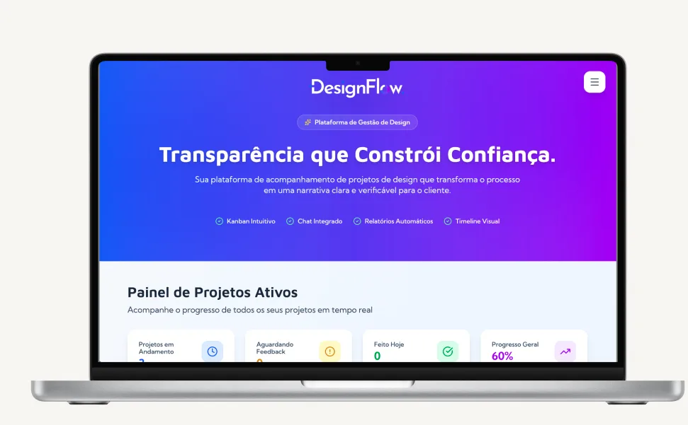
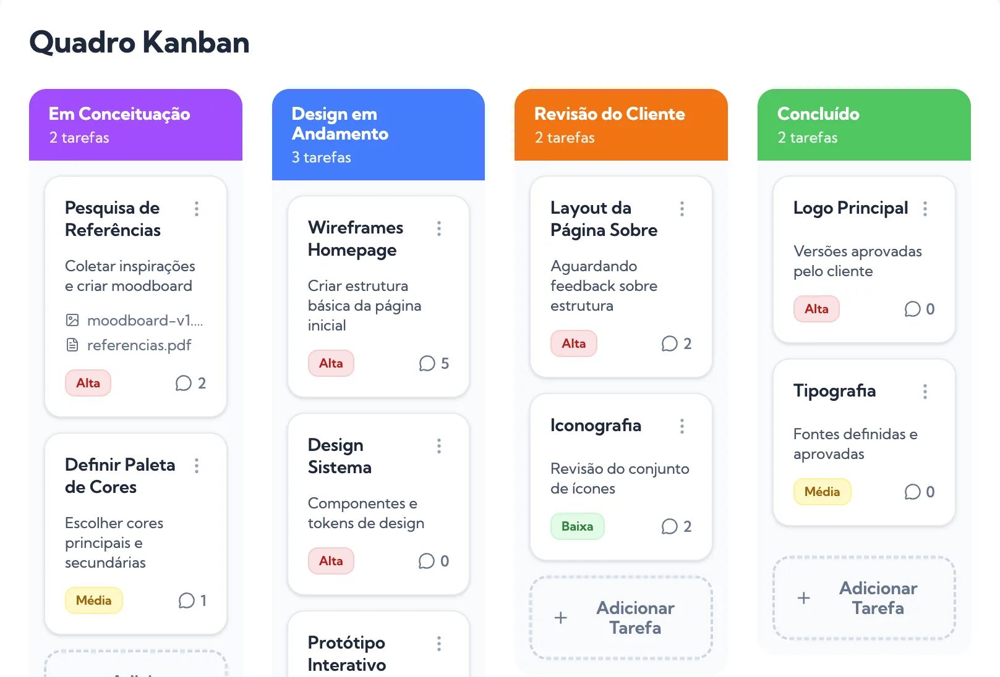
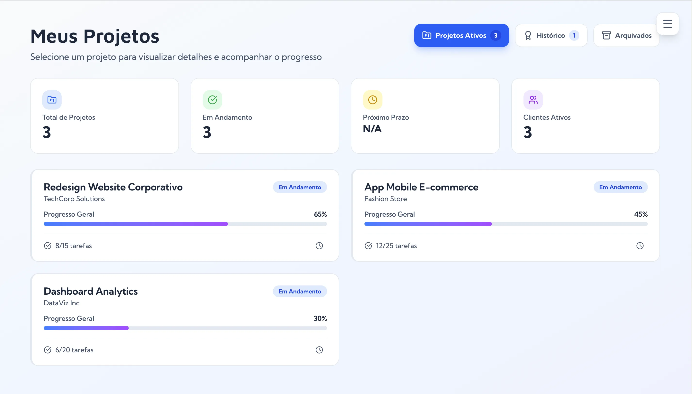

DesignFlow
Plataforma de acompanhamento de projetos de design que transforma o processo criativo em uma narrativa clara, documentada e verificável para clientes e equipes.



Quando tudo pode ser gerado por IA, como provar o valor do trabalho humano?
Vivemos um cenário de crescente produção automatizada, excesso de informações sintéticas e dificuldade em distinguir processos genuínos de conteúdos gerados artificialmente.
Nesse contexto, clientes passam a enxergar apenas o resultado final, sem visibilidade sobre decisões, iterações e esforço criativo envolvidos no desenvolvimento de um projeto.
INSIGHT 01
Designers têm dificuldade em demonstrar valor.
INSIGHT 02
Clientes não conseguem acompanhar a evolução do trabalho.
INSIGHT 03
O processo criativo se torna uma "caixa preta".
O OBJETIVO
Criar uma plataforma capaz de documentar, organizar e certificar processos criativos, transformando o desenvolvimento de projetos em evidências concretas de valor.
Entendendo o futuro do trabalho criativo
O projeto surgiu a partir da análise do cenário especulativo "A Busca por Ordem em um Mundo Complexo", que explora um futuro marcado pela superabundância de informações e pela crescente influência da inteligência artificial nos processos criativos.
INSIGHT 01
O processo criativo passará a ter tanto valor quanto a entrega final.
INSIGHT 02
Clientes precisarão de mecanismos de confiança para validar autoria e evolução de projetos.
INSIGHT 03
A documentação deixará de ser apenas registro e passará a atuar como prova de autenticidade.
INSIGHT 04
Designers precisarão demonstrar não apenas o que criaram, mas como chegaram até aquela solução.
Perguntas-chave
PERGUNTA CHAVE 01
Como transformar processos criativos em evidências verificáveis?
PERGUNTA CHAVE 02
Como aumentar a transparência entre designers e clientes?
PERGUNTA CHAVE 03
Como registrar decisões sem aumentar a carga operacional da equipe?
Hipóteses
HIPÓTESE 01
Clientes se sentem mais seguros quando conseguem acompanhar a evolução do projeto.
HIPÓTESE 02
Designers conseguem justificar melhor seu valor quando possuem histórico documentado.
HIPÓTESE 03
A geração automática de registros reduz o esforço de documentação.
Decisões tomadas
DECISÃO 01
Estruturar o produto em torno do processo e não apenas das entregas.
DECISÃO 02
Automatizar a geração de registros. Centralizar comunicação e evolução das tarefas.
DECISÃO 03
Criar um artefato final verificável que sintetize toda a jornada do projeto.
Como funciona o DesignFlow?
Planejamento
Projeto é criado e estruturado em macroetapas.
Execução
Tarefas são movimentadas no Kanban de Disciplina Criativa.
Registro
Cada ação gera metadados automaticamente.
Comunicação
Atualizações são registradas em um chat estruturado por evidências.
Certificação
É gerado o Passaporte de Criação, documento final de autenticidade do projeto.
DesignFlow
Uma plataforma de governança criativa que transforma cada etapa do processo de design em evidência verificável.
Funcionalidades principais
Kanban de Disciplina Criativa
Organiza o fluxo de trabalho e registra automaticamente movimentações e versões.
Chat de Prova de Progresso
Centraliza a comunicação por tarefa através de atualizações estruturadas.
Motor de Metadados
Captura decisões, tempo investido, alterações e registros do processo.
Passaporte de Criação
Documento gerado automaticamente que consolida toda a jornada do projeto.
Impacto esperado
Para Designers
Para Clientes
Para o Mercado
Vamos criar algo incrível juntos?
Estou sempre aberta a novos desafios e colaborações. Me conta!